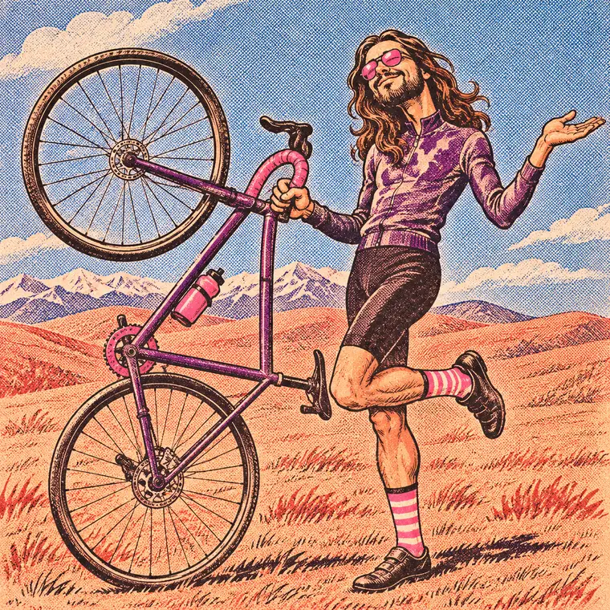
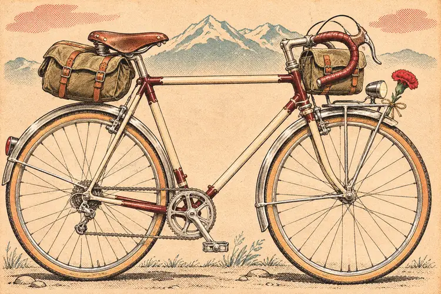

Сатирический веложурнал О дальних дорогах и лишнем багаже
Товарищ,маршрут!
Подбор велосипеда и деталей для поездок с багажом. В каталоге — доступные рамы и редкие модели китайских производителей.
«Палатку взяли. А место для велосипедиста оставили?»
Подобрать сборку
Готовые сборки
Бюджет на раму, вилку и трансмиссию.
Гравий с электроникой 900–1 200 USD Twitter G2 MAX · SENTYEH ECS PRO
Рама Алюминиевая Twitter G2 MAX.
Вилка Карбоновая из комплекта, 12×100. Задняя ось 12×142.
Трансмиссия SENTYEH ECS PRO Road 1×13. Манетки и задний переключатель ECS, кассета EVE 11–45, совместимая 13-скоростная цепь и шатуны под BSA 68 со звездой около 40T.
Фреймсет стоил 439 USD. Перед заказом ECS PRO проверьте состав лота, барабан под выбранную кассету и совместимость цепи со звездой. Для гидравлических ручек берите совместимые калиперы Flat Mount.
Фреймсет SENTYEH ECS PRO
Доступный MTB-дропбар 45 000–65 000 RUB SHULZ Boys Don’t Cry · Advent X
Рама Стальная SHULZ Boys Don’t Cry, рассчитанная на руль-баран.
Вилка Стальная из комплекта, 15×100. Задняя ось 12×142.
Трансмиссия microSHIFT Advent X 1×10, манетка в торце руля BS‑M10‑R, переключатель RD‑M6205GM, шатуны Prowheel Charm FD04S‑TT 34T, кассета SHULZ 11–46 и цепь KMC X10.
Схема повторяет серийную комплектацию. Нужны каретка 73 мм под вал выбранных шатунов и барабан HG. Фреймсет в прайсе производителя — 28 300 RUB.
Фреймсет Серийная сборка
Стальной дропбар для грунта 900–1 150 USD State 4130 All-Road · Sword 1×10
Рама State 4130 All-Road UDH с наружной проводкой. Монстр-гравий для лесных дорог и несложных троп.
Вилка Стальная из комплекта. Оси 12×100 и 12×142. Заявленный клиренс фреймсета — 700×2,25″ или 650b×2,4″.
Трансмиссия microSHIFT Sword 1×10, шатуны Sword 40T, кассета 11–48 и цепь на 10 скоростей.
Нужны барабан HG, каретка BSA 68 под вал 24 мм и тормоза Flat Mount под дорожную тягу. Фреймсет стоил 479,99 USD.
Фреймсет Трансмиссия
Gravel-plus для грейдеров 1 150–1 600 USD SPCycle G028 · Shimano GRX 1×12
Рама Карбоновая SPCycle G028. Заявленный клиренс до 700×57C.
Вилка Карбоновая из комплекта, 12×100. Задняя ось 12×142.
Трансмиссия Манетки GRX RX610, шатуны FC‑RX610‑1 с 38T, переключатель RD‑RX822‑SGS, кассета Shimano 10–51 и цепь HG 12 скоростей.
Нужны барабан Micro Spline и каретка T47 под вал Shimano 24 мм. До заказа уточните у SPCycle точную ширину стакана вашей версии и зазор звезды 38T. Фреймсет стоил 608 USD.
Фреймсет Трансмиссия
MTB-дропбар для гор 2 250–2 850 USD Salsa Fargo · GRX / Deore 1×12
Рама Стальная Salsa Fargo 2026 под руль-баран.
Вилка Карбоновая Cutthroat Deluxe из комплекта. Оси Boost 15×110 и 12×148.
Трансмиссия Манетки GRX RX610, переключатель RD‑RX822‑SGS, шатуны Shimano MT510 34T, кассета Deore M6100 10–51 и цепь M6100.
Нужны барабан Micro Spline и каретка Shimano BB52 под BSA 73. Сочетание GRX и Deore взято за основу с серийной Fargo GRX 610. Фреймсет 2026 стоил 1 599 USD.
Фреймсет Серийная комплектация
Фото рам этих сборок
Оценки на 23 ноября 2026. Колёса, кокпит, доставка и пошлины отдельно. Состав тормозов зависит от набора.
ВЫПУСК ОТ 23 НОЯБРЯ 2026
Велогазета
На первой полосе Влад Подофёдов выиграл парный зачёт Silk Road Mountain Race, Антон Коллегин взял бронзу на Tour of Orto-Sai, а Taurus остановили из-за непогоды.
Читать выпуск
ВЫБОР РЕДАКЦИИ
Топ рам для MTB-дропбара
Шесть платформ для руля-барана и грубого покрытия. Выбирайте по маршруту и багажу.
Фото показывают конкретную версию рамы. Перед покупкой сверяйте год, ростовку, клиренс и комплектацию.
Весь каталог
Народные рамы
Редкие китайские
В начале каталога — доступные платформы. У некоторых рам указана цена на сайте производителя на 23 ноября 2026 года, без доставки и пошлин.
⌕ Любой материал Все регионы Китай Европа Россия Другие регионы Все бренды Порядок каталога По названию А–Я По названию Я–А
«Найти на Pinduoduo» открывает поиск по модели. Для просмотра результатов может потребоваться вход.
Показать ещё
Галерея
Рамы из готовых сборок
На фото — рамы и вилки. Список деталей каждой сборки — в карточках на главной.

SHULZ The Lightning под Бишкеком. Иллюстрация по фотографии из публикации marxistcyclist и my_dear_shulz .
Велобарахолка Продайте или найдите раму, велосипед, сумки и запчасти.
Подать объявление
Загружаем объявления…
ДЛЯ ЛЬВА
Турист ’67
Велосипед, который выглядит так, будто вышел из веломастерской в 1967-м.
Рама Стальная, с классическими узлами и бордовыми акцентами.
Багаж Парусиновые сумки, кожаные ремешки и передняя полка.
Детали Крылья, руль-баран и современные фонари без лишнего блеска.
Эскиз для Льва. Ростовка и комплектация подбираются отдельно.

ПЕРЕД СБОРКОЙ
Как выбрать раму
Маршрут и посадка Сравните геометрию нужного размера с велосипедом, на котором вам удобно. Для сложных троп рассмотрите MTB-платформу, для асфальта и грейдера — гравийную или туристическую.
Колёса и компоненты Проверьте клиренс с выбранным ободом, стандарты осей и каретки, совместимость вилки, тормозов и трансмиссии.
Багаж и комплектация Уточните крепления и допустимую нагрузку. Каталог включает архивные модели и платформы от серийных велосипедов. Наличие рамы отдельно и комплектацию проверяйте у производителя.